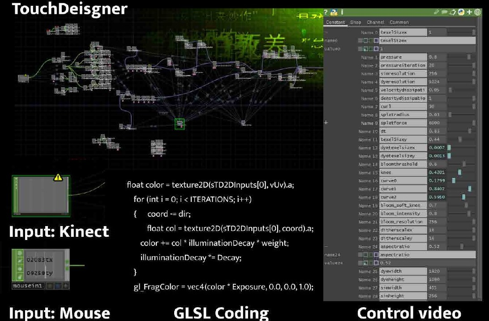

02 / INTERACTIVE INSTALLATION · EXHIBITED 2023
COWARDICE
An interactive video installation that translates the pressure of cyber violence into a bodily, spatial encounter.

- Context
- Diary of Young Artists · 798 Art District · June–July 2023
- Practice
- Interactive video installation
- Tools & methods
- TouchDesigner · Kinect input · GLSL
The question
How can a space communicate the pressure of online violence that cannot be physically seen?
COWARDICE addresses cyber violence through moving language and audience interaction. The work aims to evoke invisible restraint and the feeling of having nowhere to escape, making an online phenomenon tangible within an exhibition setting.
01 / The approach
A language of pressure
Words associated with cyber violence accumulate as a projected visual field. The presentation shifts attention from reading individual messages toward experiencing the density and pressure of their presence.
02 / The approach
The body enters the image
The documented setup connects Kinect input to a TouchDesigner network, with mouse input also shown in the technical process. Audience presence and movement are part of the encounter with the projected image.
03 / The approach
From network to exhibition
The portfolio documents the TouchDesigner node network, GLSL processing and the installed work at 798 Art District. The exhibition photographs and project film show the work in use, rather than only a digital mock-up.
In motion
Watch the project.
The film loads from YouTube when you press play. You can also use the direct link above.

What this project contributes
Part of a continuing practice.
Exhibited in Diary of Young Artists in 798 Art District in 2023. The project extends the portfolio from screen-based interaction into embodied experience.